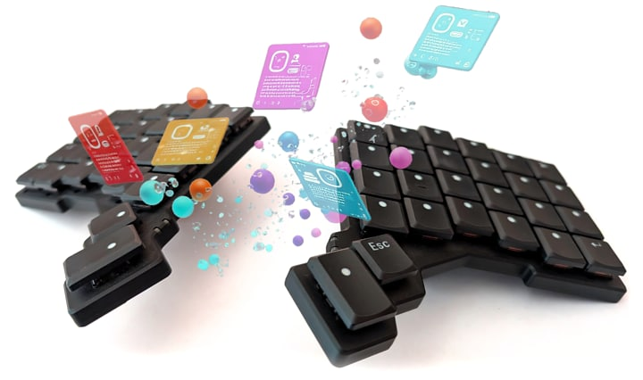

QMK Community Modules
Pascal Getreuer, 2025-03-09 (updated 2025-09-07)

QMK’s 2025 Q1 release added support for Community Modules. Modules are reusable code packages that can add new firmware features to your keyboard.
Until now, the process of adding third-party features to a QMK keymap
was a tedious one. The user must go through a number of hoops, typically
making a build rule edit and multiple changes to keymap.c.
This made it nontrivial to add a feature to a keymap.
All this is better with modules. Modules reduce the friction to add third-party features to QMK, in many cases, all the way down to requiring the user to perform no code changes at all. This dramatically improves the accessibility of reusing custom features.
Kudos to @tzarc and the QMK team for creating the Community Modules framework.
How to use modules
First, update
your QMK set up to ensure you have the Community Modules update. You
will have a modules folder in qmk_firmware if
you have it.
Step 1. Download the modules. Run these shell
commands to download  my modules, replacing
my modules, replacing
/path/to/qmk_firmware with the path of your
“qmk_firmware” folder. Or if using External
Userspace, replace it with the path to your external userspace.
cd /path/to/qmk_firmware
mkdir -p modules
git submodule add https://github.com/getreuer/qmk-modules.git modules/getreuer
git submodule update --init --recursiveModules from other authors can be install similarly as described here.
Or if you don’t want to use git, download
the modules as a .zip into the modules folder. Unzip
it, then rename the resulting qmk-modules-main folder to
getreuer.
In any case, the installed directory structure is like this:
<QMK_FIRMWARE or QMK_USERSPACE>
└── modules
└── getreuer
├── achordion
├── custom_shift_keys
├── orbital_mouse
└── ...Step 2. Add modules to keymap.json. Add one or more
modules to your keymap by writing a file keymap.json in
your keymap folder with the content
{
"modules": ["getreuer/sentence_case", "getreuer/orbital_mouse"]
}Follow the modules’ documentation for any further specific set up.
Step 3. Update the firmware. Compile and flash the
firmware as usual. If there are build errors, try running
“qmk clean” and compiling again for a clean build.
How to make modules
Other module repos
Have a look at these module repos: